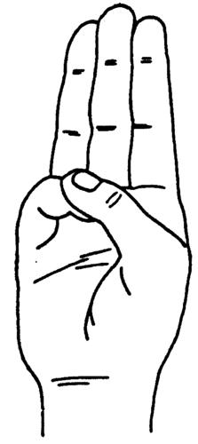

MOVIMIENTO SCOUT
Web de Paula Conde
INICIO
QUE ES
FUNDADOR
LEY Y PROMESA
ETAPAS
ACTIVIDADES
ENLACES
|  |
LEY SCOUT(Aprobada en la Asamblea General del 8 de mayo de 2011 en Pozuelo de Alarcón)1. El scout es digno de confianza.
PROMESA SCOUT(Aprobada en la Asamblea General del 8 de mayo de 2011 en Pozuelo de Alarcón)Yo Prometo por mi honor, hacer cuanto de mí dependa para: Amar a Dios y ser un buen ciudadano, Ayudar al prójimo en cualquier circunstancia Y vivir de acuerdo con la Ley Scout.
|
Esta web es un trabajo de clase de TIC de Paula Conde Chaves
Blog de la Asignatura TIC: Pulsa aquí
Colegio Moliere (Huelva)